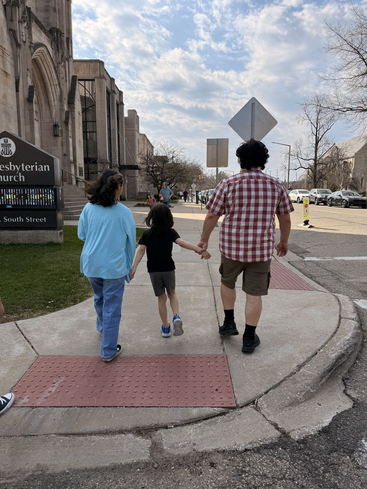

Ministerio
Todo lo que hacemos apunta a Jesús
Tres frentes, una misma misión: que las personas encuentren su camino de regreso a Dios.
CESI y formación de plantadores
CESI forma plantadores de iglesias por medio del Instituto CESI USA, con el curso Omega como herramienta central. La formación es práctica y acompañada, con mentores que caminan con el plantador en el campo.
¿Prefieres verlo grande? Abrir el formulario en pantalla completa.
La inscripción a la formación se hace por un formulario seguro de Google. Tus datos se usan solo para tu formación.
¿Quieres formarte como plantador? Escríbenos o agenda una reunión.
Plantación de iglesias
Plantamos iglesias en Michigan y apoyamos a las que están naciendo o volviendo a levantarse; hoy, la Iglesia Yo Soy en Kalamazoo. Sturgis es parte de nuestro testimonio, y buscamos en oración un nuevo campo.

González en Misión
González en Misión es la familia contando lo que Dios hace en el campo, para movilizar a la iglesia hacia las misiones. Somos obreros de Mesa Global.

Para iglesias
¿Quieres despertar a tu iglesia hacia las misiones? Ofrecemos talleres de movilización y predicación en español y en inglés, y el estudio XPLORE para grupos pequeños.